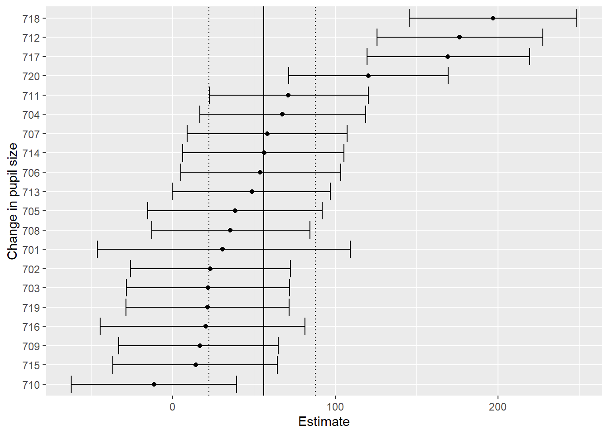

# packages
library(tidyverse) # Graphs with ggplot()
library(knitr) # Tables with kable()
library(brms) # Hierarchical Bayesian models
library(rstan) # Interface to Stan
library(bayesplot) # Model output graphs
set.seed(359)Assignment5
We focus on the effect of cognitive load on pupil size, looking at all the subjects:
load("df_pupil_complete.rda")Exercise 1
Try to fit a “maximal” model (correlated varying intercept and slopes for subjects) assuming a normal likelihood, and using these priors:
prior1 = c(
prior(normal(1000, 500), class = Intercept),
prior(normal(0, 1000), class = sigma),
prior(normal(0, 100), class = b, coef = c_load),
prior(normal(0, 1000), class = sd),
prior(lkj(2), class = cor))
# class = cor measures the covariance between pupil size and load
df_pupil_complete <- df_pupil_complete %>%
mutate(c_load = load - mean(load))Examine the effect of (centered) load on pupil size, and the average pupil size. What do you conclude?
# only individual-level random effects
file_path <- "brms_model1.rds"
if (file.exists(file_path)) {
model1 <- readRDS(file_path)
} else {
set.seed(359)
model1 <- brm(p_size ~ 1 + c_load + (c_load | subj),
# varying intercept is automatically included
data = df_pupil_complete,
prior = prior1, iter = 2000, warmup = 500, cores = 4)
saveRDS(model1, file = file_path)
}
model1 Family: gaussian
Links: mu = identity
Formula: p_size ~ 1 + c_load + (c_load | subj)
Data: df_pupil_complete (Number of observations: 2228)
Draws: 4 chains, each with iter = 2000; warmup = 500; thin = 1;
total post-warmup draws = 6000
Multilevel Hyperparameters:
~subj (Number of levels: 20)
Estimate Est.Error l-95% CI u-95% CI Rhat Bulk_ESS
sd(Intercept) 3312.32 444.96 2520.02 4266.45 1.00 849
sd(c_load) 71.19 15.15 46.91 106.11 1.00 1500
cor(Intercept,c_load) 0.30 0.24 -0.23 0.71 1.00 2133
Tail_ESS
sd(Intercept) 1904
sd(c_load) 2351
cor(Intercept,c_load) 2525
Regression Coefficients:
Estimate Est.Error l-95% CI u-95% CI Rhat Bulk_ESS Tail_ESS
Intercept 2476.93 487.49 1535.08 3439.14 1.00 904 1356
c_load 40.44 24.50 -8.59 88.76 1.00 1816 2446
Further Distributional Parameters:
Estimate Est.Error l-95% CI u-95% CI Rhat Bulk_ESS Tail_ESS
sigma 505.20 7.58 490.26 520.50 1.00 10067 4453
Draws were sampled using sampling(NUTS). For each parameter, Bulk_ESS
and Tail_ESS are effective sample size measures, and Rhat is the potential
scale reduction factor on split chains (at convergence, Rhat = 1).The effect of cognitive load on pupil size is not clear, CI: [-8.59, 88.76].
The model could also be analyzed using cross-level models, that is, two-way random effects (individual-level and trial-level)
file_path <- "brms_model2.rds"
if (file.exists(file_path)) {
model2 <- readRDS(file_path)
} else {
set.seed(359)
model2 <- brm(p_size ~
1 + c_load + (c_load | subj) + (c_load | trial),
# varying intercept is automatically included
data = df_pupil_complete,
prior = prior1, iter = 2000, warmup = 500, cores = 4)
saveRDS(model2, file = file_path)
}
model2 Family: gaussian
Links: mu = identity
Formula: p_size ~ 1 + c_load + (c_load | subj) + (c_load | trial)
Data: df_pupil_complete (Number of observations: 2228)
Draws: 4 chains, each with iter = 2000; warmup = 500; thin = 1;
total post-warmup draws = 6000
Multilevel Hyperparameters:
~subj (Number of levels: 20)
Estimate Est.Error l-95% CI u-95% CI Rhat Bulk_ESS
sd(Intercept) 3316.77 434.41 2526.48 4223.27 1.00 1033
sd(c_load) 71.49 15.12 47.54 106.00 1.00 2029
cor(Intercept,c_load) 0.32 0.23 -0.17 0.72 1.00 2851
Tail_ESS
sd(Intercept) 1620
sd(c_load) 3590
cor(Intercept,c_load) 3575
~trial (Number of levels: 120)
Estimate Est.Error l-95% CI u-95% CI Rhat Bulk_ESS
sd(Intercept) 96.34 15.80 65.22 127.72 1.00 2954
sd(c_load) 15.51 10.09 0.81 37.16 1.00 1857
cor(Intercept,c_load) -0.19 0.39 -0.84 0.64 1.00 5195
Tail_ESS
sd(Intercept) 2812
sd(c_load) 2338
cor(Intercept,c_load) 4188
Regression Coefficients:
Estimate Est.Error l-95% CI u-95% CI Rhat Bulk_ESS Tail_ESS
Intercept 2432.58 491.72 1460.46 3385.38 1.00 916 1459
c_load 38.23 24.00 -11.27 84.84 1.00 2341 3247
Further Distributional Parameters:
Estimate Est.Error l-95% CI u-95% CI Rhat Bulk_ESS Tail_ESS
sigma 495.38 7.70 480.59 510.98 1.00 9622 4096
Draws were sampled using sampling(NUTS). For each parameter, Bulk_ESS
and Tail_ESS are effective sample size measures, and Rhat is the potential
scale reduction factor on split chains (at convergence, Rhat = 1).Calculate ICC:
Between subject variance: \(\sigma^2_{subj} = 3316.77^2 = 11000963\).
Between trial variance: \(\sigma^2_{trial} = 96.34^2 = 9281.396\).
Residuals: \(\sigma^2_{e} = 495.38^2 = 245401.3\).
ICC of subjects: \(ICC\_{subj} = 11000963 / (11000963 + 9281.396 + 245401.3) \approx 0.98\).
ICC of trials: \(ICC\_{trial} = 9281.396 / (11000963 + 9281.396 + 245401.3) \approx 0.001\).
There is almost no interclass correlation of trials, so no need to include random effect of trails.
Exercise 2
Do a sensitivity analysis for the prior on the intercept (α). What is the estimate of the effect (β) under different priors?
# sensitivity analysis 1
prior3 = c(
prior(normal(2000, 500), class = Intercept),
prior(normal(0, 1000), class = sigma),
prior(normal(0, 100), class = b, coef = c_load),
prior(normal(0, 1000), class = sd),
prior(lkj(2), class = cor))
file_path <- "brms_model3.rds"
if (file.exists(file_path)) {
model3 <- readRDS(file_path)
} else {
set.seed(359)
model3 <- brm(p_size ~ 1 + c_load + (c_load | subj),
# varying intercept is automatically included
data = df_pupil_complete,
prior = prior3, iter = 2000, warmup = 500, cores = 4)
saveRDS(model3, file = file_path)
}
model3 Family: gaussian
Links: mu = identity
Formula: p_size ~ 1 + c_load + (c_load | subj)
Data: df_pupil_complete (Number of observations: 2228)
Draws: 4 chains, each with iter = 2000; warmup = 500; thin = 1;
total post-warmup draws = 6000
Multilevel Hyperparameters:
~subj (Number of levels: 20)
Estimate Est.Error l-95% CI u-95% CI Rhat Bulk_ESS
sd(Intercept) 2929.27 398.75 2204.41 3770.09 1.00 1032
sd(c_load) 70.47 14.91 46.77 104.33 1.00 1698
cor(Intercept,c_load) 0.29 0.23 -0.20 0.68 1.00 2484
Tail_ESS
sd(Intercept) 1462
sd(c_load) 3161
cor(Intercept,c_load) 3368
Regression Coefficients:
Estimate Est.Error l-95% CI u-95% CI Rhat Bulk_ESS Tail_ESS
Intercept 3367.41 456.55 2433.91 4267.11 1.00 851 962
c_load 44.43 21.52 0.52 85.88 1.00 1687 2876
Further Distributional Parameters:
Estimate Est.Error l-95% CI u-95% CI Rhat Bulk_ESS Tail_ESS
sigma 505.33 7.53 491.15 520.45 1.00 8456 4470
Draws were sampled using sampling(NUTS). For each parameter, Bulk_ESS
and Tail_ESS are effective sample size measures, and Rhat is the potential
scale reduction factor on split chains (at convergence, Rhat = 1).# sensitivity analysis 2
prior4 = c(
prior(normal(3000, 500), class = Intercept),
prior(normal(0, 1000), class = sigma),
prior(normal(0, 100), class = b, coef = c_load),
prior(normal(0, 1000), class = sd),
prior(lkj(2), class = cor))
file_path <- "brms_model4.rds"
if (file.exists(file_path)) {
model4 <- readRDS(file_path)
} else {
set.seed(359)
model4 <- brm(p_size ~ 1 + c_load + (c_load | subj),
# varying intercept is automatically included
data = df_pupil_complete,
prior = prior4, iter = 2000, warmup = 500, cores = 4)
saveRDS(model4, file = file_path)
}
model4 Family: gaussian
Links: mu = identity
Formula: p_size ~ 1 + c_load + (c_load | subj)
Data: df_pupil_complete (Number of observations: 2228)
Draws: 4 chains, each with iter = 2000; warmup = 500; thin = 1;
total post-warmup draws = 6000
Multilevel Hyperparameters:
~subj (Number of levels: 20)
Estimate Est.Error l-95% CI u-95% CI Rhat Bulk_ESS
sd(Intercept) 2592.33 356.28 1974.94 3366.89 1.00 1092
sd(c_load) 69.59 14.42 46.83 103.40 1.00 1615
cor(Intercept,c_load) 0.27 0.21 -0.19 0.63 1.00 2443
Tail_ESS
sd(Intercept) 1738
sd(c_load) 2117
cor(Intercept,c_load) 3373
Regression Coefficients:
Estimate Est.Error l-95% CI u-95% CI Rhat Bulk_ESS Tail_ESS
Intercept 4119.09 406.57 3309.45 4906.23 1.01 897 1207
c_load 49.57 19.05 11.11 86.48 1.00 2114 2412
Further Distributional Parameters:
Estimate Est.Error l-95% CI u-95% CI Rhat Bulk_ESS Tail_ESS
sigma 505.02 7.52 490.31 520.19 1.00 6832 4490
Draws were sampled using sampling(NUTS). For each parameter, Bulk_ESS
and Tail_ESS are effective sample size measures, and Rhat is the potential
scale reduction factor on split chains (at convergence, Rhat = 1).# sensitivity analysis 3
prior5 = c(
prior(normal(3000, 1000), class = Intercept),
prior(normal(0, 1000), class = sigma),
prior(normal(0, 100), class = b, coef = c_load),
prior(normal(0, 1000), class = sd),
prior(lkj(2), class = cor))
file_path <- "brms_model5.rds"
if (file.exists(file_path)) {
model5 <- readRDS(file_path)
} else {
set.seed(359)
model5 <- brm(p_size ~ 1 + c_load + (c_load | subj),
# varying intercept is automatically included
data = df_pupil_complete,
prior = prior5, iter = 2000, warmup = 500, cores = 4)
saveRDS(model5, file = file_path)
}
model5 Family: gaussian
Links: mu = identity
Formula: p_size ~ 1 + c_load + (c_load | subj)
Data: df_pupil_complete (Number of observations: 2228)
Draws: 4 chains, each with iter = 2000; warmup = 500; thin = 1;
total post-warmup draws = 6000
Multilevel Hyperparameters:
~subj (Number of levels: 20)
Estimate Est.Error l-95% CI u-95% CI Rhat Bulk_ESS
sd(Intercept) 2365.80 327.83 1818.06 3085.79 1.00 1280
sd(c_load) 68.72 14.01 45.74 100.73 1.00 2061
cor(Intercept,c_load) 0.26 0.20 -0.16 0.62 1.00 2414
Tail_ESS
sd(Intercept) 1893
sd(c_load) 2962
cor(Intercept,c_load) 3265
Regression Coefficients:
Estimate Est.Error l-95% CI u-95% CI Rhat Bulk_ESS Tail_ESS
Intercept 5040.94 484.49 4090.56 6008.75 1.00 965 1367
c_load 55.99 16.87 22.26 87.79 1.00 2102 3142
Further Distributional Parameters:
Estimate Est.Error l-95% CI u-95% CI Rhat Bulk_ESS Tail_ESS
sigma 505.18 7.52 490.78 520.35 1.00 8844 4216
Draws were sampled using sampling(NUTS). For each parameter, Bulk_ESS
and Tail_ESS are effective sample size measures, and Rhat is the potential
scale reduction factor on split chains (at convergence, Rhat = 1).Estimation is pretty sensitive to the priors of intercept. Nevertheless, new estimations indicate a clear effect of cognitive load, CI: [0.52, 85.88], CI: [11.11, 86.48], and CI: [22.26, 87.79].
Exercise 3
Is the effect of load consistent across subjects? Investigate this visually.
# extract the overall group level effect:
beta <- c(as_draws_df(model5)$b_c_load)
# extract the individual adjustments
ind_effects_v <- paste0("r_subj[",
unique(df_pupil_complete$subj), ",c_load]")
adjustment <- as.matrix(as_draws_df(model5)[ind_effects_v])Warning: Dropping 'draws_df' class as required metadata was removed.# get the by subject effects in a data frame
by_subj_effect <- as_tibble(beta + adjustment)
par_h <- lapply(by_subj_effect, function(x) {
tibble(
Estimate = mean(x),
Q2.5 = quantile(x, .025),
Q97.5 = quantile(x, .975)
)
}) %>%
bind_rows() %>%
# add a column of model id and one with subject labels:
mutate(
subj = unique(df_pupil_complete$subj))%>%
arrange(Estimate) %>%
mutate(subj = factor(subj, levels = subj))
ggplot(
par_h,
aes(
ymin = Q2.5, ymax = Q97.5, x = subj, y = Estimate
)
) +
geom_errorbar() +
geom_point() +
geom_hline(
yintercept =
posterior_summary(model5)["b_c_load", "Estimate"]
) +
geom_hline(
yintercept =
posterior_summary(model5)["b_c_load", "Q2.5"],
linetype = "dotted", linewidth = 0.5
) +
geom_hline(
yintercept =
posterior_summary(model5)["b_c_load", "Q97.5"],
linetype = "dotted", linewidth = 0.5
) +
xlab("Change in pupil size") +
coord_flip()
Interpretation: SD(c_load) from the estimation already implies that the effect of load is not consistent across subjects. Inspection of the figure further indicates that the overall effect is driven by less than half of participants.